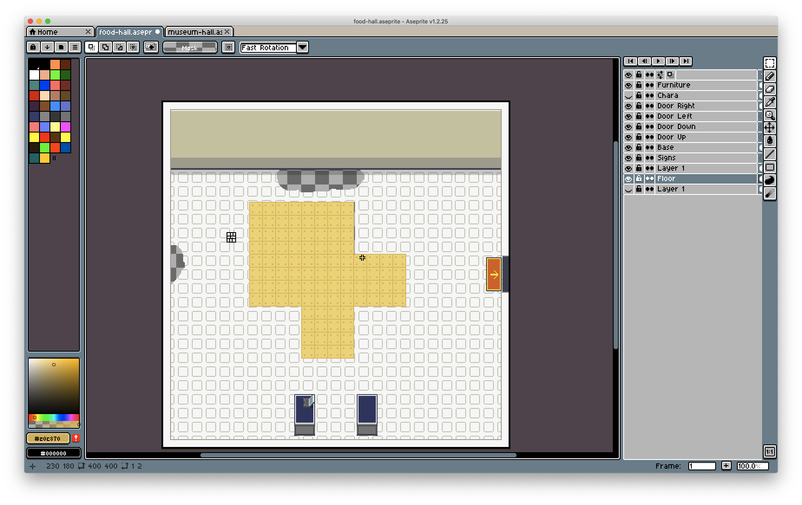

Museum of Salil
Games are objectively a wonderful medium, and video games especially are a great way to tell stories. The interactivity, and immersiveness make it a compelling method to communicate narratives, and I was very excited, and nervous about making a game. In the past I have used Unity, although primarily as an interactive 3D viewing tool, using camera controller prefabs. The programming component of Unity is immensely frightening, and I've seen enough to know how complex game programming can get. So, I approached this project with a fair bit of nervous energy, although still very excited to finally create a game of my own.
After much work, and even more to work on, I present, Museum of Salil! This is an autobiographical game which lets players get to know me as they wander through the museum. Play the game to find out more!
Play the game here!
One of my favourite games of all time is Pokémon Emerald, and it's a game I still play to this very day in fact. Over time, I've come to notice and appreciate the narrative, the gameplay, the various gamification methods, and the complex Pokémon mechanisms. Everytime I play the game, I notice another element about it that I really enjoy. I don't think I've found a game in the last 16 years which has dethroned Emerald as my favourite game. Portal 2 comes close, and so does The Stanley Parable. A common thread running across all three of these games is the slow unravelling of the story with time and progress. These games don't reveal the context and the story entirely, but instead, allow you to slowly discover whats happening as you progress through the game and speak to the characters. I really enjoy this style of gameplay and narrative and wanted imbibe the same characteristics within my game as well.
As for the autobiographical part, it was only right that I choose a museum as a medium through which to tell my story. Not only does it a great way to tell a story through a space, layer by layer, room by room, it also makes sense considering the fact that I studied Exhibition Design, and learnt how to tell stories through spaces. I thought of creating multiple rooms, each of which would reveal a little bit about me. Akin to postmodernist storytelling a la Attempts on Her Life, each room, or story would be disconnected from each other, yet still be about a common topic: me. I also thought it'll be funny to create a museum about myself, a shrine to my ego. Although I do sincerely create this as a storytelling technique, there's no smoke without fire.
With the non-linear storytelling technique I didn't have a storyboard, and so I worked on figuring out the ideal configuration of the space, which would work well both technically and visually.
Development #
Before I had written a line of code, or drawn any art, I knew I wanted to create a pixel art based game, as a homage to Pokémon Emerald. To whitebox the game, I created a 3-frame character sprite, and quickly sketched out the different scenes, using lines and words drawn across the screen. I would use these assets till I had the basic code down, and then work on swapping out these assets for something more substantial.
Whiteboxing to test gameplay
The initial challenge I faced was rendering and controlling the main character. I knew that I'd need to animate the main character controlled by the player, which would need to bump into other objects and trigger conversations. For this I needed to build out functionality which would cycle through sprites, and recognise collisions. I used the p5 play library which allowed me integrate these functions quickly. Ideally I'd have liked to have only used p5js, and nothing more, but time was short and I couldn't find other easy alternatives.
Testing pixel-art architecture
After a few iterations, I had the basic functions figured out with the character moving across the screen with the sprite animations, colliding into NPC's and triggering a dialogue box, and moving across rooms. At this point I realised that the code was getting quite messy, and it was difficult to navigate through it on the p5js editor. I downloaded the folder, and switched to working on Brackets, an open source code editor, which also allowed me to quickly duplicate lines, and preview visuals. I also started packaging sections of code into functions, which I separated into different javascript files. This let me segment my code into different parts and made it quicker and easier to navigate and create mental models of the code structure.

Trying out different flooring options
Once I was happy with the code, I started creating assets for the game. This took far longer than I had initially accounted for. Creating multiple sprites for the player controlled character took a full day. Animating is difficult, and perhaps even more difficult with the constraint of such few pixels. Communicating the motion of movement through the shifting of pixels is quite challenging. Although creating the spaces was easier in comparison, I used sprite maps from Pokémon Emerald to help me architect the spaces, and take colour and pattern references. Creating architectural elements in a pixel art style is tricky, and the spritesheet reference helped accelerate the process of creating the spaces.
As the finished art assets were exported, I started to integrate them into the game. The features within the assets guided the development of the game on top of the basic functionality. For example, the new completed character needed a different control setup as compared to the version used for the whiteboxing. The walls and and other elements in the assets facilitated the addition of colliders to prevent the character from escaping the canvas. The exhibits required the addition of triggers, which would trigger the dialogue box to appear, with the correct text to appear. The lines of code kept increasing, and I would keep separating the functions into new javascript files to retain readability.
Overview of the code
Every new challenge or difficulty presented me with an opportunity to refactor my code, and clean it up. Iteration by iteration, the game started to take shape, with new features being added, and old ones removed. This process got me to do some more research on p5js and the p5 play library–which helped me simplify the code and make it more efficient. I did run into a bizarre problem, in which the frame rate of the game would drop from a constant 30fps to 1fps within half a minute. After having studied the performance logs, I spotted the culprit. I was drawing the collider sprites for the walls every frame, which was causing the brutal slowdown. I implemented a system which would behave as a pseudo-setup() function by checking for NPC sprites. If there weren't any, the that block of code would run, before populating the scene with NPC sprites. This helped me create the wall sprites one, and thus resolving the performance issue.
As the game development concluded, I shared a copy of the game with a few of my friends to playtest it and get some feedback. From this feedback, I implemented a more efficient interaction strategy, improved readability, added new dialogues, and added interactive elements. This was an important part of the process as it helped me verify the narrative strategy, and helped improve the playability of the game.